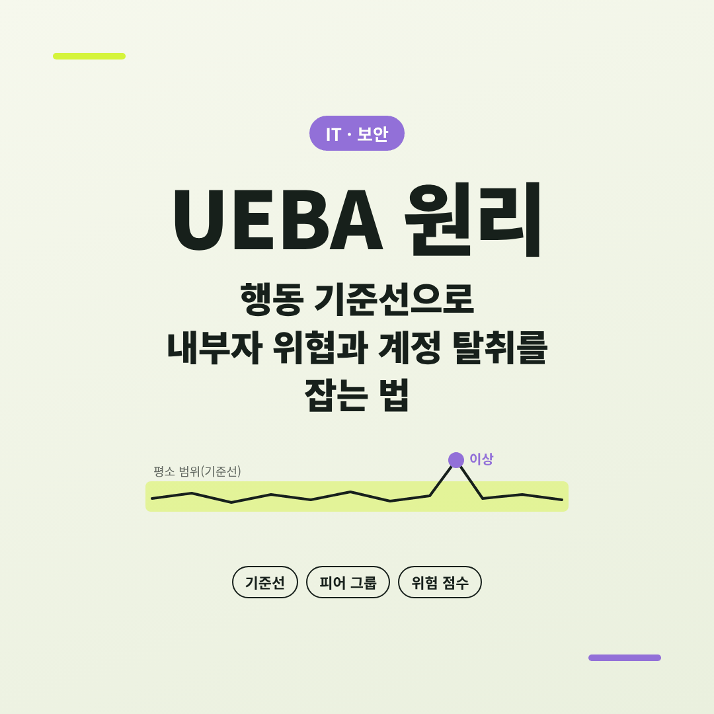
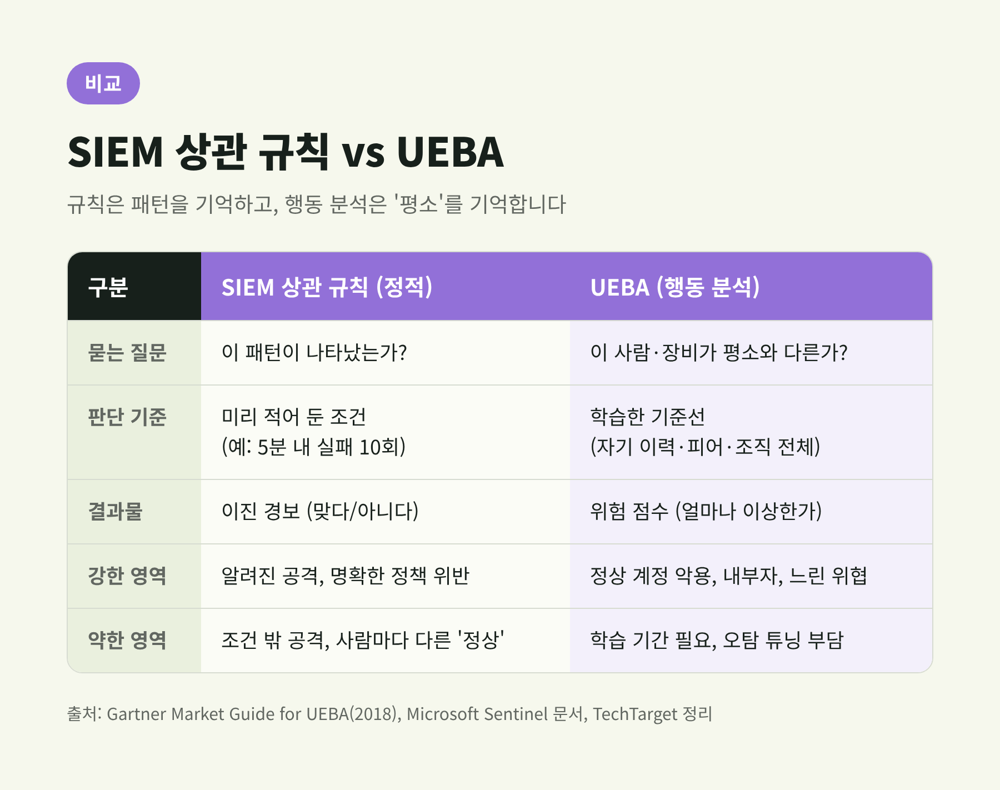
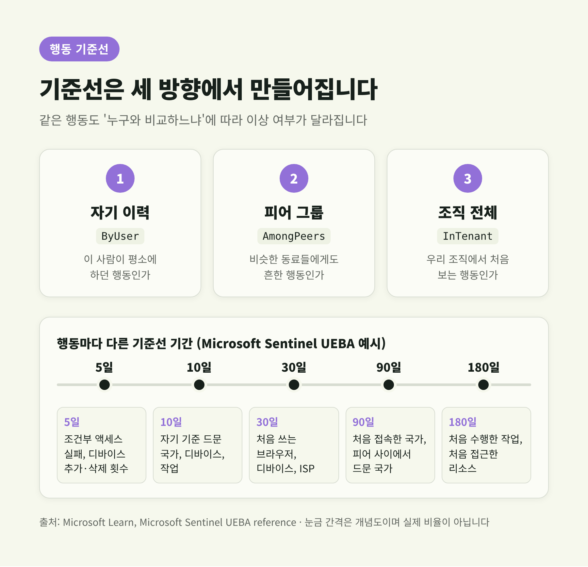
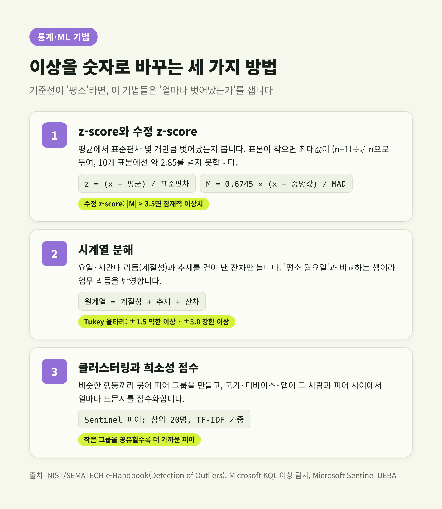
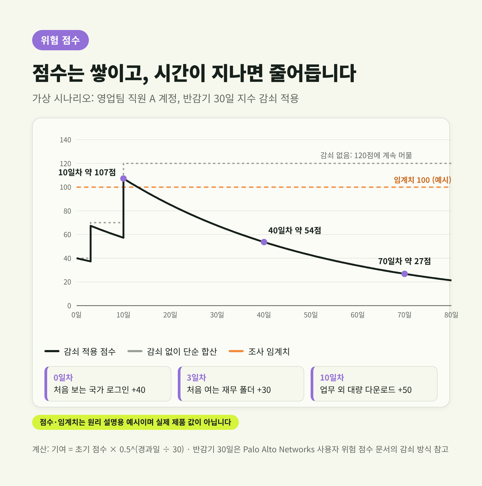
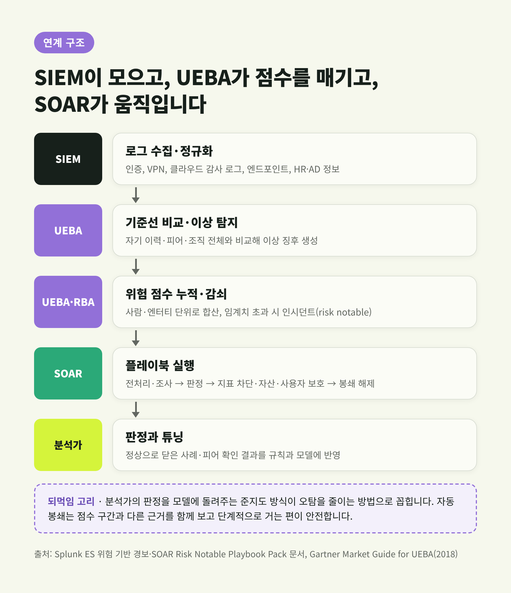
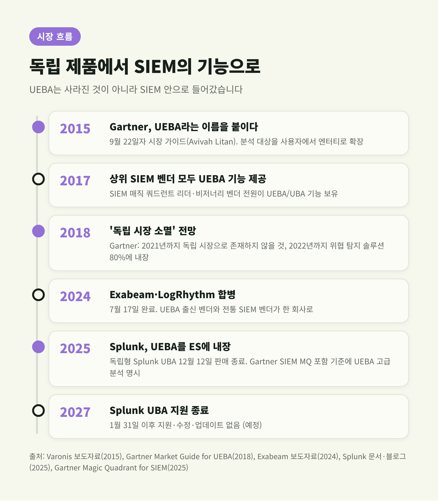

UEBA 원리 — 행동 기준선으로 내부자 위협과 계정 탈취를 잡는 법

이번 글에서는 UEBA(사용자·엔터티 행동 분석)가 어떤 원리로 움직이는지 정리해 보겠습니다. 행동 기준선, 피어 그룹, 위험 점수의 누적과 감쇠가 핵심이고, SIEM 상관 규칙과의 차이와 오탐 튜닝, SOAR 연계까지 실무 관점에서 다룹니다.
먼저 요약부터 드립니다.
- UEBA는 "알려진 나쁜 패턴"이 아니라 "이 사람의 평소"를 기준으로 이상을 찾습니다. 그래서 정상 계정으로 움직이는 내부자와 탈취된 계정에 강합니다.
- 이상 하나하나를 경보로 내지 않고, 점수로 쌓았다가 시간이 지나면 깎습니다. 경보의 단위가 '이벤트'에서 '사람'으로 바뀌는 셈입니다.
- 독립 시장으로서의 UEBA는 사실상 SIEM 안으로 흡수됐습니다. 지금 UEBA를 고민한다는 것은 대개 SIEM의 행동 분석 기능을 어떻게 튜닝할지 고민한다는 뜻입니다.
■ 정상 계정으로 들어오는 공격은 규칙에 잘 걸리지 않습니다
공격자가 악성코드 대신 진짜 아이디와 비밀번호로 들어오면, 로그에는 "정상 로그인"만 남습니다.
이 경로는 생각보다 흔합니다. Verizon의 2025 데이터 침해 조사 보고서(DBIR)는 1만 2,195건의 확인된 침해를 분석했는데, 최초 침입 경로 1위가 자격 증명 악용(22%)이었습니다. 취약점 악용(20%)보다 높습니다.
내부자 문제도 가볍지 않습니다. Ponemon 연구소의 2026년 내부자 리스크 비용 보고서에 따르면, 조사 대상 354개 조직의 연평균 내부자 관련 비용은 1,950만 달러였습니다. 이 가운데 부주의·실수가 1,030만 달러, 악의적 내부자가 470만 달러, 자격 증명 탈취가 450만 달러를 차지했습니다. 사고를 봉쇄하기까지는 평균 67일이 걸렸습니다.
미국 CISA는 내부자 위협을 "내부자가 승인된 접근 권한을, 알면서든 모르면서든, 해를 끼치는 데 사용할 위협"으로 정의합니다. 여기서 중요한 단어는 '승인된'입니다. 권한 자체는 합법이니, 권한 위반을 찾는 규칙으로는 잘 보이지 않습니다.
MITRE ATT&CK도 정상 계정 악용(T1078)을 잡는 단서로 규칙 위반보다 '평소와 다른 모습'을 꼽습니다. 허용 시간 밖 로그온, 지리적 불일치, 평소 SSH 키를 쓰던 계정의 비밀번호 로그인, 짧은 시간에 비정상적으로 많은 호스트에 인증하는 계정 같은 것들입니다. 그리고 "허용 로그온 시간(예: 현지 오전 9시~오후 6시)" 같은 값은 조직마다 조정해야 할 항목이라고 분명히 적어 둡니다.
문제는 그 '평소'가 사람마다 다르다는 점입니다. 야간 배치를 돌리는 DBA에게 새벽 2시 로그인은 일상이고, 영업 담당자에게 해외 접속은 출장일 뿐입니다. UEBA는 바로 이 지점에서 출발합니다.
■ SIEM 상관 규칙과 UEBA는 질문이 다릅니다
SIEM 상관 규칙은 "이 패턴이 나타났는가?"를 묻습니다. 5분 안에 로그인 실패 10회, 알려진 악성 IP와 통신, 관리자 그룹에 계정 추가 같은 조건을 미리 적어 두고, 일치하면 경보를 냅니다.
UEBA는 "이 사람(또는 이 장비)이 평소와 다른가?"를 묻습니다. Microsoft Sentinel 문서는 이 차이를 짧게 정리합니다. ML 기반 이상 규칙은 무엇이 이상한 활동인지를 보고, UEBA는 누가 이상하게 행동하는지를 본다는 것입니다.
결과물도 다릅니다. Gartner는 2018년 UEBA 시장 가이드에서 고급 분석이 이진(binary) 경보 대신 보통 0(위험 없음)~100(매우 위험) 범위의 위험 점수를 만든다고 설명했습니다. 규칙은 "맞다/아니다"를 내놓고, UEBA는 "얼마나 이상한가"를 내놓습니다.

그렇다고 규칙이 필요 없어지는 것은 아닙니다. Gartner도 같은 가이드에서 규칙·시그니처·임계치가 계층형 방어 안에서 여전히 유용하다고 적었습니다. 알려진 공격은 규칙이 더 빠르고 설명하기도 쉽습니다. UEBA는 그 바깥, 즉 규칙으로 적기 어려운 영역을 맡는 구조로 이해하시면 정확합니다.
■ 행동 기준선: 무엇을, 얼마나 오래 배우는가
Gartner의 정의를 옮기면 이렇습니다. UEBA는 사용자와 엔터티(호스트, 애플리케이션, 네트워크 트래픽, 데이터 저장소)의 행동 기준선을 시간 축과 피어 그룹 축에서 만들고, 여기서 벗어난 활동을 의심 대상으로 표시합니다.
'엔터티'가 들어간 데에는 이유가 있습니다. 예전 이름인 UBA(사용자 행동 분석)는 사람의 행동만 봤습니다. Gartner가 2015년 UEBA라는 이름을 붙이면서 서버, 라우터, IoT 기기처럼 사람이 아닌 대상까지 분석 범위로 넓혔습니다. 서비스 계정이나 서버가 갑자기 평소와 다른 곳과 통신하는 것도 탐지 대상이 된다는 뜻입니다.
기준선을 실제로 어떻게 잡는지는 공개 문서가 가장 구체적인 Microsoft Sentinel이 좋은 예입니다.
Sentinel UEBA는 각 엔터티의 기준선을 세 가지로 만듭니다. 그 엔터티 자신의 이력, 피어 그룹, 그리고 조직 전체입니다.
필드 이름에도 그대로 드러납니다. ByUser는 자기 이력, AmongPeers는 피어 비교, InTenant는 조직 전체 비교입니다.
흥미로운 점은 행동마다 기준선 기간이 다르다는 것입니다.
- 5일: 조건부 액세스 실패 횟수, 디바이스 추가·삭제 횟수처럼 빠르게 변하는 수치
- 10일: 사용자 자신 기준으로 드문 국가, 드문 디바이스, 드문 작업
- 30일: 처음 쓰는 브라우저·디바이스·ISP, 피어 사이에서 드문 브라우저
- 90일: 처음 접속한 국가, 피어 사이에서 드문 접속 국가
- 180일: 처음 수행한 작업, 처음 접근한 리소스, 피어 사이에서 드문 작업·리소스
여기에 180일 동안 쓰지 않은 휴면 계정(IsDormantAccount), 30일 안에 만든 신규 계정(IsNewAccount) 같은 표시가 덧붙습니다.

기간을 다르게 두는 이유는 행동의 리듬이 다르기 때문이라고 생각합니다. 로그인 실패 횟수는 며칠만 봐도 평소를 알 수 있지만, "이 사람이 이 작업을 처음 해 보는가"는 반년치를 봐야 판단할 수 있습니다.
도입 현실도 함께 알아 두셔야 합니다. Gartner 2018 가이드에 따르면 벤더들은 기준선 수립에 최소 30일, 길게는 90일의 데이터를 요구했고, 고객들은 UEBA를 가동하고 튜닝하는 데 3~6개월이 걸렸다고 답했습니다. 개념 검증(PoC)도 최소 30일을 권장합니다. 켜자마자 쓸 만한 결과가 나오는 도구는 아니라는 뜻입니다.
■ 피어 그룹: "나와 비슷한 사람들"과 비교하기
자기 이력만으로는 풀리지 않는 문제가 있습니다. 어제 입사한 사람에게는 이력이 없습니다. 처음 해 보는 일이 모두 '처음'이라 전부 이상해 보입니다.
Elastic의 설명이 이 차이를 잘 보여 줍니다. 평소 하루 50건쯤 문서를 내려받던 직원이 5,000건을 받으면, 자기 과거와 비교하는 시간 분석(temporal)으로 잡힙니다. 반면 이력이 없는 신규 직원이 5,000건을 받으면 시간 분석으로는 판단이 서지 않습니다. 이때 대부분 동료가 하루 10~75건을 받는다는 집단 모델과 비교하는 집단 분석(population)이 이상을 잡아냅니다.
피어 그룹을 정하는 방식은 제품마다 다릅니다.
- Microsoft Sentinel: 보안 그룹 멤버십, 메일링 리스트 등 연관성을 바탕으로 사용자마다 상위 20명의 피어를 동적으로 고릅니다. TF-IDF 가중치를 써서 작은 그룹을 공유할수록 더 가까운 피어로 봅니다. 전사 공지 메일링 리스트를 같이 받는 것보다, 다섯 명짜리 프로젝트 그룹을 함께 쓰는 쪽이 더 큰 의미를 갖습니다.
- Splunk UBA: HR 그룹(AD 그룹·관리 체인), 조직 단위(OU), 행동 패턴을 클러스터링한 행동 그룹, 네트워크 활동 기반 디바이스 그룹의 네 가지를 씁니다.
한계도 분명합니다. Gartner는 많은 벤더가 클러스터링 기반 동적 피어 그룹 능력을 과장하며, 결국 조직이 그룹을 직접 정의하고 정리해야 할 수 있다고 경고했습니다. Elastic 역시 집단 분석은 집단이 동질적이어야 하며, 엔지니어와 HR처럼 성격이 다른 집단은 나눠서 분석하라고 권합니다. 피어 그룹의 품질은 결국 AD와 인사 데이터의 품질을 넘지 못합니다. 퇴사자가 그룹에 남아 있거나 조직 개편이 반영되지 않으면, 비교 대상부터 틀어집니다.
■ 이상을 숫자로 바꾸는 방법: z-score, 시계열, 클러스터링
기준선이 있다면, 이제 "얼마나 벗어났는가"를 숫자로 바꿔야 합니다. 제품 내부 알고리즘은 대부분 공개되지 않지만, 바탕에 깔린 통계 기법은 비교적 잘 알려져 있습니다.
첫째, z-score입니다. 관측값에서 평균을 빼고 표준편차로 나눈 값입니다. 평소 하루 로그인 20회(표준편차 4)인 계정이 40회를 기록하면 z = (40−20)/4 = 5가 됩니다. 간단하지만 함정이 있습니다. NIST 통계 핸드북은 표본이 작을 때 z-score로 이상치를 판정하면 오해를 부를 수 있다고 지적합니다. 표본 n개에서 나올 수 있는 최대 z-score가 (n−1)/√n으로 제한되기 때문입니다. 계산해 보면 표본이 10개일 때 최대값은 약 2.85로, "z가 3을 넘으면 이상"이라는 규칙은 아예 작동하지 않습니다. 그래서 평균 대신 중앙값, 표준편차 대신 MAD(중앙값 절대 편차)를 쓰는 수정 z-score가 자주 쓰입니다. 공식은 0.6745 × (x − 중앙값) / MAD이고, 절댓값 3.5를 넘으면 잠재적 이상치로 봅니다(Iglewicz·Hoaglin 권고). 이상값 하나가 평균을 끌어올리는 문제에 덜 흔들립니다.
둘째, 시계열 분해입니다.
로그인은 요일과 시간대에 따라 출렁입니다. 월요일 아침의 급증은 이상이 아닙니다.
Microsoft의 KQL 함수 series_decompose_anomalies()는 계열을 계절성(주기 자동 탐지), 추세(선형 회귀), 잔차로 나눕니다. 계절성과 추세를 더한 값이 기준선이고, 남은 잔차에 Tukey 울타리 검정을 적용합니다. 점수가 ±1.5를 넘으면 약한 이상, ±3.0을 넘으면 강한 이상입니다.
"평소 월요일과 비교해" 이상한지를 보는 방식이라, 단순 임계치보다 업무 리듬을 잘 반영합니다.
셋째, 클러스터링과 희소성 점수입니다. 비슷한 행동을 보이는 사용자끼리 묶어 행동 피어 그룹을 만들고(Splunk UBA, Gartner가 언급한 동적 피어 그룹), 어떤 국가·디바이스·앱이 그 사람이나 피어 사이에서 얼마나 드문지를 점수로 매깁니다. Sentinel의 조사 우선순위 점수(0~10)는 이런 희소성 점수(엔터티 이상 점수)와 로그인 실패 급증 같은 시간 패턴 점수(시계열 점수)를 결합해 만듭니다.

Gartner는 이 위에 쓰이는 ML을 세 갈래로 나눕니다. 라벨이 있는 정상·악성 데이터로 배우는 지도학습, 정상만 배워 이탈을 표시하는 비지도학습, 그리고 분석가의 판정 결과를 비지도 모델에 되먹여 오탐을 줄이는 준지도(강화) 학습입니다. 같은 가이드는 벤더의 "AI" 과장 때문에 구매자가 제품을 평가하기 어렵다는 점도 함께 지적했습니다. 어떤 알고리즘인지보다, 그 결과를 분석가가 설명할 수 있는지가 실무에서는 더 중요합니다.
■ 위험 점수는 쌓이고, 또 줄어듭니다
UEBA의 가장 실무적인 부분은 점수 관리입니다. 이상 하나하나는 대개 사소합니다. 처음 보는 국가에서의 로그인, 평소 안 쓰던 공유 폴더 접근, 업무 시간 외 다운로드. 각각만 보면 설명 가능한 일입니다. UEBA는 이를 개별 경보로 내지 않고, 사람(또는 엔터티) 단위로 점수를 쌓습니다.
누적 방식은 크게 두 갈래입니다.
첫째는 시간창 합산입니다. Splunk Enterprise Security의 위험 기반 경보(RBA)가 대표적입니다. 좁은 조건의 위험 규칙들이 원시 이벤트를 보고 위험 이벤트를 risk 인덱스에 기록하고, 위험 인시던트 규칙이 위험 객체(사용자·시스템)별 합계를 봅니다. 기본 규칙은 두 가지입니다.
- 24시간 동안 한 객체의 위험 점수 합이 100을 넘으면 risk notable 생성
- 7일 동안 한 객체에서 고유 MITRE ATT&CK 전술 3개 이상, 고유 소스 4개 이상이 관찰되면 생성
권한 있는 관리자에게 점수를 1.5배 곱하는 식으로 자산·ID 맥락을 반영할 수도 있습니다.
둘째는 감쇠(decay)입니다. Palo Alto Networks의 SaaS 보안 사용자 위험 점수는 5(기준)~100 범위를 쓰고, 사고의 영향이 약 30일마다 절반으로 줄어드는 지수 감쇠를 적용합니다. 60일이 넘은 사고는 기여가 매우 작아지고, 새 사고가 없으면 점수는 기준값 5로 돌아갑니다. ManageEngine Log360도 내부자, 계정 탈취, 의심 로그온, 데이터 유출의 네 가지 하위 위험에 각각 가중치와 시간 감쇠 계수를 곱해 합산하는 구조를 공개하고 있습니다.
Exabeam은 조금 다른 방향에서 접근합니다. 각 지표에 전문가가 정한 '앵커 점수'를 주고 세션 단위로 합산하는데, 과거에 자주 발생한 지표일수록 베이지안 방법으로 가중치를 낮춥니다. 흔한 이상이 점수를 부풀리지 못하게 하는 장치입니다.
감쇠가 왜 필요한지는 가상 시나리오로 보면 분명해집니다.

아래는 원리 설명을 위해 만든 가상 시나리오이며, 점수와 임계치는 예시입니다.
영업팀 직원 A의 계정에서 0일차에 처음 보는 국가 로그인(40점), 3일차에 평소 접근하지 않던 재무 공유 폴더 열람(30점), 10일차에 업무 시간 외 대량 다운로드(50점)가 발생했다고 가정해 보겠습니다. 반감기 30일을 적용하면 10일차 점수는 약 31.7 + 25.5 + 50 ≈ 107점이 되어 임계치 100을 넘습니다. 하나씩 보면 어느 것도 100에 못 미치지만, 겹치면서 조사 대상이 됩니다. 이후 추가 이상이 없으면 40일차에는 약 54점, 70일차에는 약 27점으로 내려갑니다.
감쇠가 없다면 어떻게 될까요. 오래 근무한 사람일수록 과거의 사소한 이상이 끝없이 쌓여, 아무 일이 없어도 위험 순위 상위에 머무르게 됩니다. 반대로 감쇠가 너무 빠르면, 몇 주에 걸쳐 천천히 움직이는 내부자를 놓칩니다. 반감기와 시간창을 정하는 일은 결국 "우리 조직에서 위협이 얼마나 천천히 움직이는가"에 대한 판단입니다.
■ 오탐과 튜닝: 가장 현실적인 숙제
UEBA를 도입한 팀이 가장 먼저 부딪히는 벽은 오탐입니다. Vectra의 2023년 조사에 따르면 SOC 팀은 하루 평균 4,484건의 경보를 받고, 그중 67%는 처리하지 못합니다. 응답자의 83%는 받는 경보가 오탐이라고 답했습니다. 행동 분석이 이 숫자를 줄여 줄 수도 있지만, 잘못 튜닝하면 "이상하다"는 경보를 하나 더 얹는 결과가 됩니다.
실무에서 효과가 확인된 접근을 정리하면 이렇습니다.
- 맥락 데이터를 붙입니다. Sentinel은 부서·그룹 멤버십·Entra 역할이 담긴 IdentityInfo 테이블을 이벤트에 조인하면 오탐이 줄어든다고 안내합니다. 예를 들어 "고가치 서버에 IT 부서가 아닌 사람이 로그온하면 경보", "GitHub 앱에 Developers 그룹이 아닌 사람이 접근하면 경보"처럼 씁니다.
- 피어로 교차 확인합니다. 불가능한 이동이 떴다면 사용자에게 VPN 사용 여부를 확인하고, 엔터티 페이지의 자주 쓰는 위치를 본 뒤, 피어들도 같은 위치에서 접속하는지 확인하는 순서를 제시합니다. 팀 전체가 같은 해외 지사를 경유한다면 그것은 이상이 아닙니다.
- 흔한 이상의 가중치를 낮춥니다. Exabeam의 베이지안 가중치처럼, 자주 뜨는 지표가 점수를 지배하지 않게 합니다.
- 판정을 되먹입니다. 분석가가 "정상"으로 닫은 사례를 모델에 돌려주는 준지도 방식이 Gartner가 꼽은 오탐 감소 방법입니다.
- ID 데이터부터 정리합니다. Sentinel의 영향 범위(BlastRadius) 계산은 Entra ID의 관리자(Manager) 속성이 채워져 있어야 동작합니다. 조직도 데이터가 비어 있으면 피어 그룹도, 영향도 계산도 흐려집니다.
솔직히 말씀드리면, 튜닝에 끝은 없습니다. 조직 개편, 재택 정책 변경, 새 SaaS 도입이 있을 때마다 '평소'가 바뀌기 때문입니다. 기준선이 다시 안정될 때까지 해당 부서의 점수를 한동안 보수적으로 해석하는 운영 규칙을 두는 편이 좋습니다.
기준선 자체의 한계도 기억해 두실 만합니다. 기준선은 "학습 기간의 행동이 정상이었다"는 전제를 깔고 있습니다. 이미 침해된 상태에서 학습을 시작했다면, 그 상태가 정상으로 굳어집니다. 그래서 도입 초기에는 규칙 기반 탐지와 위협 헌팅을 함께 돌리는 것이 안전합니다.
■ SIEM·SOAR와 함께 쓰는 구조
지금의 UEBA는 혼자 일하지 않습니다. 보통 SIEM이 로그를 모으고, UEBA가 이상과 위험 점수를 만들고, SOAR가 그 결과로 조사와 대응을 자동화하는 흐름입니다.
Splunk를 예로 들면 흐름이 선명합니다. Enterprise Security의 위험 규칙이 위험 이벤트를 쌓고, 임계치를 넘으면 risk notable이 생깁니다. Splunk SOAR의 Risk Notable Playbook Pack은 이를 받아 전처리·조사 → 분석가 판정 → 대응(지표 차단, 자산·사용자 보호) → 복구(봉쇄 해제) 순서로 처리합니다. 자산·ID 태그를 기준으로 자동 봉쇄하는 플레이북과 봉쇄를 자동으로 풀어 주는 플레이북도 함께 들어 있습니다.
Sentinel에서는 인시던트 안의 사용자 엔터티에서 바로 최근 30일 이상 징후를 조회할 수 있고, 이상이 있는 사용자에게는 UEBA Anomalies 태그가 붙습니다. 분석가가 "이 사람이 원래 이랬나"를 확인하는 데 쓰던 시간을 줄여 줍니다.

자동 대응을 붙일 때는 단계를 나누시길 권합니다. 위험 점수만으로 계정을 바로 잠그면, 오탐 하나가 영업 담당자의 하루를 멈춰 세웁니다. 점수가 중간 구간이면 추가 인증 요구나 담당자 알림 정도로, 높은 구간이면서 다른 근거가 겹칠 때만 봉쇄로 가는 식의 단계적 설계가 현실적입니다.
■ Gartner의 정의 변화: 독립 시장에서 SIEM의 기능으로
UEBA의 역사는 짧지만 변화는 빨랐습니다.
- 2015년: Gartner가 Avivah Litan 애널리스트 명의로 UEBA 시장 가이드를 발행했습니다(9월 22일자). 사용자에서 엔터티로 분석 범위가 넓어진 시점입니다.
- 2017년: Gartner SIEM 매직 쿼드런트의 리더·비저너리 사분면에 있는 SIEM 벤더가 모두 UEBA 또는 UBA 기능을 제공했습니다. Exabeam, Securonix 같은 UEBA 벤더는 반대로 SIEM 기능을 갖추기 시작했습니다.
- 2018년: Gartner는 "2021년까지 UEBA 시장은 독립 시장으로 존재하지 않게 될 것"이라고 내다봤습니다. 2022년까지 핵심 UEBA 기법이 위협 탐지·인시던트 우선순위 솔루션의 80%에 내장될 것이라는 전망도 함께 냈습니다. 순수 UEBA 벤더 수는 인수합병으로 줄고 있었습니다.
- 2024년: Exabeam과 LogRhythm이 합병을 마쳤습니다(7월 17일). UEBA 출신 벤더와 전통 SIEM 벤더가 한 회사가 된 것입니다.
- 2025년: Splunk는 향상된 UEBA를 Enterprise Security에 네이티브로 넣었다고 발표했고, 독립형 Splunk UBA는 12월 12일 판매를 종료했습니다. 지원 종료는 2027년 1월 31일입니다.

Gartner의 2025년 SIEM 매직 쿼드런트(10월 8일자)는 이 흐름을 그대로 보여 줍니다. 포함 기준의 애드온 역량 목록에 자동화·오케스트레이션, 위협 인텔리전스 플랫폼과 함께 "UEBA와 데이터 과학(지도·비지도 ML, 딥러닝)을 활용한 고급 분석"이 나란히 올라 있습니다. UEBA가 별도 시장이 아니라 SIEM을 평가하는 항목 중 하나가 된 것입니다.
다만 '흡수됐다'가 '평준화됐다'는 뜻은 아닙니다. 같은 보고서는 Securonix가 고급 UEBA 유스케이스를 잘 다룬다고 평가한 반면, Elastic은 고급 사용자에게 UEBA 커스터마이즈·튜닝·디버깅이 어렵고, Google은 기본 제공 UEBA 유스케이스가 부족하며, Palo Alto Networks XSIAM은 UEBA 기본 기능의 정교함이 아쉽다고 짚었습니다. SIEM을 고를 때 "UEBA 있음" 체크 표시만 보지 말고, 기준선 기간·피어 그룹 방식·점수 감쇠·튜닝 수단을 따로 확인해야 하는 이유입니다.
예전에는 UEBA를 별도 제품으로 사서 SIEM 옆에 붙였습니다. 지금은 SIEM 안의 행동 분석 기능을 얼마나 잘 길들이느냐가 관건입니다.
정리하면 이렇습니다. UEBA는 마법 같은 AI가 아니라 기준선, 비교 대상, 점수 관리라는 세 가지 설계의 조합입니다. 무엇을 얼마나 오래 배울지, 누구와 비교할지, 점수를 언제 쌓고 언제 지울지 — 이 세 질문에 조직의 답을 넣는 과정이 곧 UEBA 운영입니다.
"규칙은 공격을 기억하고, 행동 분석은 사람을 기억합니다."
규칙만으로 충분하냐고 물으신다면, 정상 계정으로 들어오는 공격이 최초 침입 경로 1위인 지금은 그렇지 않다고 답하겠습니다.
참고자료
- Gartner, Market Guide for User and Entity Behavior Analytics (2018-04-23) — https://intelligentcio.com/wp-content/uploads/sites/12/2019/01/gartner-market-guide-for-ueba-2018-analyst-report.pdf
- Gartner, Magic Quadrant for Security Information and Event Management (2025-10-08) — https://secpost.ru/wp-content/uploads/2025/10/gartner-siem-mq-2025.pdf
- Varonis 보도자료, Gartner Market Guide for UEBA (2015-10-19) — https://rss.globenewswire.com/news-release/2015/10/19/777263/33473/en/Gartner-Analysts-Recognize-Varonis-in-New-Market-Guide-for-User-and-Entity-Behavior-Analytics.html
- TechTarget, What is user behavior analytics (UBA) — https://www.techtarget.com/searchsecurity/definition/user-behavior-analytics-UBA
- IBM, What is UEBA — https://www.ibm.com/think/topics/ueba
- CISA, Defining Insider Threats — https://www.cisa.gov/defining-insider-threats
- MITRE ATT&CK, DET0560 Detection of Valid Account Abuse — https://attack.mitre.org/detectionstrategies/DET0560
- Verizon, 2025 Data Breach Investigations Report — https://www.verizon.com/about/news/2025-data-breach-investigations-report
- Help Net Security, 2026 Cost of Insider Risks (Ponemon) — https://www.helpnetsecurity.com/2026/02/26/insider-risk-costs-2026/
- Microsoft Learn, UEBA in Microsoft Sentinel — https://learn.microsoft.com/azure/sentinel/identify-threats-with-entity-behavior-analytics
- Microsoft Learn, Microsoft Sentinel UEBA reference — https://learn.microsoft.com/nb-no/azure/sentinel/ueba-reference
- Microsoft Learn, Microsoft Sentinel anomalies reference — https://learn.microsoft.com/azure/sentinel/anomalies-reference
- Microsoft Learn, Investigate incidents with UEBA data — https://learn.microsoft.com/fi-fi/azure/sentinel/investigate-with-ueba
- Microsoft Learn, Anomaly detection and forecasting (KQL) — https://learn.microsoft.com/en-us/kusto/query/anomaly-detection
- NIST/SEMATECH e-Handbook, Detection of Outliers — https://itl.nist.gov/div898/handbook/eda/section3/eda35h.htm
- Elastic, Temporal vs. population analysis in Elastic machine learning — https://www.elastic.co/blog/temporal-vs-population-analysis-in-elastic-machine-learning
- Splunk, Splunk UBA's Machine Learning Models — https://www.splunk.com/en_us/blog/security/elevating-security-intelligence-with-splunk-uba-s-machine-learning-models.html
- Splunk Docs, How risk-based alerting works — https://docs.splunk.com/Documentation/ES/7.1.0/RBA/HowRBAWorks
- Splunk Docs, Default risk incident rules — https://docs.splunk.com/Documentation/ES/7.1.0/RBA/Usedefaultriskincidentrules
- Splunk, Native UEBA in Splunk Enterprise Security (2025-09-09) — https://www.splunk.com/en_us/blog/security/native-ueba-in-splunk-enterprise-security.html
- Splunk Help, End-of-sale and end-of-life for Splunk UBA — https://help.splunk.com/en/security-offerings/splunk-user-behavior-analytics/release-notes/5.4.5/additional-resources
- Splunk Docs, Risk Notable Playbook Pack for Splunk SOAR — https://docs.splunk.com/Documentation/ESSOC/latest/user/Useplaybookpack
- Exabeam, A UEBA Scoring System Explained — https://www.exabeam.com/blog/ueba/a-user-and-entity-behavior-analytics-scoring-system-explained/
- Exabeam, Exabeam and LogRhythm Complete Merger (2024-07-17) — https://www.exabeam.com/press-releases/exabeam-and-logrhythm-complete-merger/
- Palo Alto Networks, User Risk Scoring — https://docs.paloaltonetworks.com/saas-security/behavior-threats/user-risk-scoring
- ManageEngine, How UEBA risk scoring works — https://manageengine.com/log-management/cyber-security/how-ueba-risk-scoring-works.html
- Help Net Security, 67% of daily security alerts overwhelm SOC analysts (Vectra, 2023) — https://www.helpnetsecurity.com/2023/07/20/soc-analysts-tools-effectiveness/